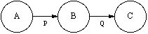
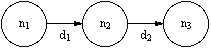

Process networks is a model of computation in which multiple parallel processes can execute simultaneously. The model uses a directed graph notation, where each node represents a process and each edge represents a one-way FIFO queue of data words. A producer node inserts data into the queue, while a consumer node removes them. This model is natural for describing the streams of data samples in a signal processing system.
 Consumers are blocked when they attempt to get data from an empty input channel. However, queues are of infinite length, so producers are not blocked. This can cause unbounded accumulation of data on a given queue.
This model is determinate: the results of the computation (the data produced on the queues) does not depend on the firing order of the processes.
The problems of determining whether a Kahn process network will terminate, or can be scheduled with bounded memory are undecidable.
Infinitely large queues cause obvious implementation problems, so Parks developed rules for dynamic scheduling in bounded memory. Parks lists 2 requirements for the scheduler:
- Complete Execution - The scheduler should implement a complete execution of the process network program. If the program is non-terminating, then it should be executed forever without terminating.
- Bounded Execution - The scheduler should (if possible) execute the process network program so that only a bounded number of tokens ever accumulate on any of the communication channels.
When these requirements conflict (such as for unbounded programs), then requirement 1 takes precedence over requirement 2. We prefer a complete, unbounded execution to a partial, bounded one.
Parks goes on to show that the following rules will yield a bounded schedule, if one exists:
- Block when attempting to read an empty queue.
- Block when attempting to write to a full queue.
- If we reach artificial deadlock, where execution has stopped because processes are blocked writing to full channels, increase the capacity of the smallest full queue until the producer associated with it can fire.
This bounded scheduling process has the desired behavior for all types of programs -- terminating or non-terminating, strictly bounded, bounded, or unbounded. Now any scheduler will work, because any execution leads to bounded buffering on the queues. This model is well-suited for implementation using the thread model of concurrent programming.
Karp and Miller developed a restricted model similar to process networks, called "computation graphs", which are also determinate. The computation is represented by a finite graph containing nodes n1,...,nk, each associated with a function O1,...,Ok, connected by a set of arcs d1,...,dt.
 Each arc dp has four non-negative integer constants associated with it:
- Ap - The number of data words initially present.
- Up - The number of data words inserted each time the producer node fires.
- Wp - The number of data words removed each time the consumer node fires.
- Tp - The number of data words required to be on the arc before the consumer can fire.
Clearly Tp must be greater than or equal to Wp. Three basic rules apply to the execution of a computation graph:
- No node will fire unless each input edge dp has at least Tp data words.
- The execution will continue until every node has at least one input edge with less than Tp data words.
- In a "proper execution," every node that has at least Tp data words on each input edge will eventually fire.
For this restricted model, the questions of termination and boundedness are decidable. Karp and Miller provide iterative algorithms to determine these properties. Computation graphs can be statically scheduled. In fact, synchronous data flow (SDF) is a special case where Tp = Wp for every arc.
For additional information:
- G. Kahn, "The semantics of a simple language for parallel programming." In Info. Proc., pages 471-475, Stockholm, Aug. 1974.
- G. Kahn and D. B. MacQueen, "Coroutines and networks of parallel processes." In Info. Proc., pages 993-998, Toronto, Aug. 1977.
- T. M. Parks. "Bounded Scheduling of Process Networks." Technical Report UCB/ERL-95-105, PhD Dissertation, EECS Department, University of California. Berkeley, CA 94720, December 1995.
- R. M. Karp and R. E. Miller, "Properties of a Model for Parallel Computations: Determinacy, Termination, Queueing." SIAM Journal, vol. 14, pp. 1390-1411, Nov. 1966.